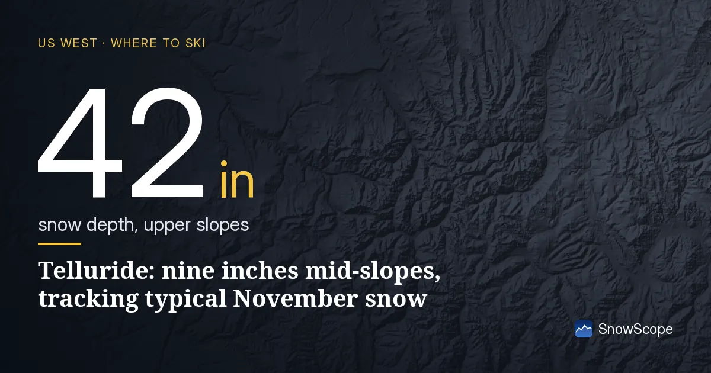
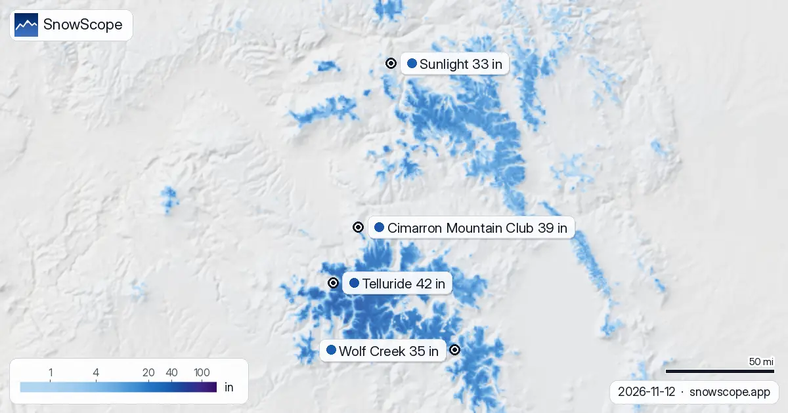

Telluride: nine inches mid-slopes, tracking typical November snow
Telluride is tracking close to its seasonal average for mid-November, with the mid-slopes holding 9 in (24 cm) of snow water. Saturday's incoming system will deposit 5 in (13 cm) primarily above 10,000 ft (3,050 m), so upper peaks will capture most of the new accumulation.
See the live snow forecast for Telluride in the SnowScope appSnow depth, powder alerts and the 3D map, free.
Telluride in line with seasonal water storage
Telluride's mid-elevations are storing the typical water volume for mid-November—the kind of early autumn accumulation that feeds mountain rivers through winter. At 10,623 ft (3,237 m), our model estimates 9 in (24 cm) of snow water, running at 92 percent of what past seasons show for this date. The upper peaks at 12,503 ft (3,812 m) hold much more—38 in (96 cm)—because elevation and cold preserve moisture longer.
Station measurements from nearby Alta Lakes, taken on November 10 at 11,289 ft (3,441 m), recorded 19 in (48 cm), confirming the model's picture. The base valley at 8,734 ft (2,662 m) has minimal snow cover, so this early season is concentrating water storage high on the mountain where it will stay locked through winter.
| Resort | Snow depth | New snow, 72 h | Coming, next days | Top |
|---|---|---|---|---|
| Telluride | 42 in (106 cm) | 0 in (0 cm) | 5 in (13 cm) | 12,507 ft (3,812 m) |
| Cimarron Mountain Club | 39 in (98 cm) | 0 in (0 cm) | 3 in (7 cm) | 11,355 ft (3,461 m) |
| Wolf Creek | 35 in (88 cm) | 0 in (0 cm) | 4 in (11 cm) | 11,762 ft (3,585 m) |
| Sunlight | 33 in (84 cm) | 0 in (0 cm) | 1 in (3 cm) | 9,849 ft (3,002 m) |

Saturday brings snow across upper elevations
Saturday will add to the mountain's water account with 5 in (13 cm) of new precipitation. Friday stays dry—the freezing level holds high at 9,700–11,980 ft (2,960–3,650 m)—so only rain falls, mostly on the upper basin. Saturday morning the freezing level drops sharply to 5,900 ft (1,790 m), converting precipitation to snow from mid-elevations upward.
By Saturday afternoon the freezing level rises to 10,500 ft (3,190 m), so lower mid-slopes shift to rain or wet snow. This means upper slopes collect new snow water all day Saturday, while mid-elevations experience a mix. Fresh snow water stays stored as ice at high elevation; rain lower down may run off quickly or refreeze overnight.
Best early-season terrain on high north-facing slopes
Where to ski depends on your tolerance for thin early-season snow. Telluride's summit and high north-facing slopes offer the safest skiing—these elevations have enough base not to strike rock. The mid-slopes, holding only 9 in (24 cm), require riders to stay on groomed runs and avoid side terrain where rocks lie close to the surface. After Saturday's snow, the upper slopes above 11,500 ft (3,500 m) will offer fresh powder skiing, while intermediate runs between 10,500 ft and 11,500 ft (3,200–3,500 m) will mix groomed snow with new accumulation.
Check the resort's website before you arrive to confirm which lifts open in November—not all terrain is served early season. Lower-mountain runs below 9,500 ft (2,900 m) should be avoided now. Rock hazards remain high, and the thin base offers no margin for error.
Other peaks in the region tracking similar water storage
Telluride is building a typical early-season water supply, but other peaks nearby are tracking similar patterns. Cimarron Mountain Club carries 39 in (98 cm) on upper slopes—slightly deeper than Telluride—and Wolf Creek holds 35 in (88 cm) with 20 in (51 cm) of measured depth from November 10. All three mountains are in the normal November range: best skiing above 10,000 ft, with exposed terrain below.
The region as a whole has 132 of 195 major ski areas with continuous snow cover, so options exist. By late November and December, all these mountains will improve as cooler air locks in and storms bring regular accumulation. Right now, early season requires discipline about slope selection and height.
Practical tips for thin snow and fast conditions
Early-season snow looks adequate but can hide rocks within just a few turns. Stick to groomed runs where patrol has swept out hazards and snow-making has thickened the base. Stay on pistes until Sunday afternoon, when Saturday's fresh snow settles enough to track safely under groomers.
Target high north-facing aspects where snow survives longest as the sun strengthens in coming weeks. Avoid lower-elevation terrain below 9,500 ft (2,900 m) where the 9 in (24 cm) base leaves little margin. Before any off-piste skiing after Saturday's new accumulation, check the Colorado Avalanche Information Center bulletin—today's danger is low (level 1), but new snow will add load to the mountain.
Tips for skiers
- Contact Telluride to confirm which lifts serve terrain above 10,500 ft (3,200 m), where snow storage is deepest and safest for early season.
- Target upper slopes above 11,500 ft (3,500 m) on Saturday afternoon to ski fresh powder as it accumulates and settles.
- Avoid terrain below 9,500 ft (2,900 m)—the 9 in (24 cm) base leaves rocks exposed and offers no safety margin.
- Stick to groomed runs through Saturday morning until fresh snow consolidates enough to explore off-trail safely.
- Avalanche danger is currently low (level 1), but after Saturday's accumulation, check the Colorado Avalanche Information Center for updated conditions before off-piste travel.
About these numbers
Resort snow depths are the deepest snow on the resort's upper slopes from the SnowScope snow model (about 1 km, run of 12 November); they are estimates for an area, not a measurement at one point. Station values are measurements on the date shown. Forecasts can change. Always read the official avalanche bulletin before going off-piste.
Official avalanche bulletins: Colorado Avalanche Information Center
Cite this report
For research, teaching or the press: the numbers and charts are free to reuse under CC BY 4.0 with this citation.
SnowScope (2026), Telluride: nine inches mid-slopes, tracking typical November snow, https://snowscope.app/blog/en/2026/11/us-west-where-to-ski-this-weekend-12-november-2026.html, accessed 2026-11-12
SnowScope (Atlas Labs). (2026, November 12). Telluride: nine inches mid-slopes, tracking typical November snow. SnowScope snow reports. https://snowscope.app/blog/en/2026/11/us-west-where-to-ski-this-weekend-12-november-2026.html
BibTeX
@misc{snowscope2026uswestwheretoskithisweek,
author = {{SnowScope (Atlas Labs)}},
title = {Telluride: nine inches mid-slopes, tracking typical November snow},
year = {2026},
month = nov,
howpublished = {\url{https://snowscope.app/blog/en/2026/11/us-west-where-to-ski-this-weekend-12-november-2026.html}},
note = {Published 2026-11-12 18:23 UTC; accessed 2026-11-12}
}· CC BY 4.0 · Methods, data and tools →
Telluride: snow and temperature by height, this winter vs last (tools) →
Follow Telluride
Free: a message when fresh snow is coming, and the forecast every morning.
More snow reports

Wolf Creek leads with mid-slope snow at 361% of normal for November 10, well ahead of typical and signaling significant water storage in the mountains.

Steamboat, Colorado, for families: what works for toddlers, school-age kids, teens and parents, with the snow of 46 past winters at three heights.

Big Sky, Montana, made easy to picture: 5,850 acres under Lone Peak, and snow that is about five times deeper near the top than at the base in 46 past winters.